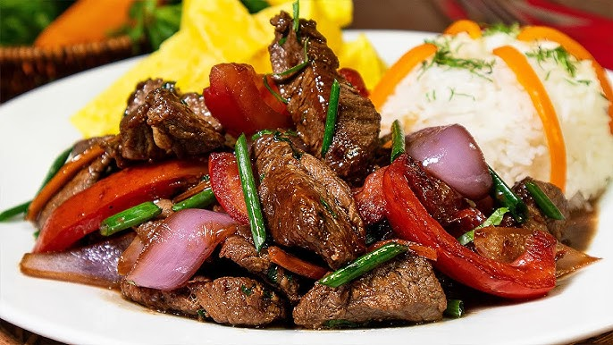

El Lomo Saltado es un plato icónico de la cocina chifa.
Ingredientes
500g de lomo de res
1 cebolla roja en juliana
2 tomates en gajos
1 ají amarillo sin venas
Salsa de soja, vinagre, cilantro
Preparacion
Calienta el aceite de oliva en una sartén grande y agrega la carne para tu lomo saltado. Espera a que se dore por todos sus lados y de inmediato condimenta con el ajo. Vierte el vinagre blanco y deja que se evapore a la mitad. Luego, agrega la salsa de soya. Añade el agua caliente y cocina durante unos segundos, removiendo de vez en cuando para darle el sabor característico del lomo saltado.
Agrega la cebolla y el tomate en gajos, y condimenta con un toque de sal, pimienta y comino. Añade el ají amarillo y saltea durante unos minutos hasta cocer la carne y dejar los vegetales al dente, como en un buen lomo saltado.
Una vez lista la preparación, retira del fuego y agrega el cilantro. Sirve de inmediato con arroz blanco y papas fritas al estilo peruano y disfruta de tu lomo saltado casero. ¡Un delicioso lomo saltado para saborear en cualquier ocasión!
Ingredientes Clave
Haz clic en el ingrediente para saber más sobre él .
Ají de gallina
El Ají de gallina es un plato de fondo, concretamente de la costa peruana.
Ingredientes
1 pechuga de pollo
4 panes franceses
½ cebolla chica
3 tazas de agua
½ taza de leche evaporada
3 cucharada de queso parmesano
2 cucharada de ají mirasol molido
1 cucharada de ají amarillo molido
½ cucharada de ají panca molido
2 cucharaditas de ajos
¼ cucharadita de palillo
¼ cucharadita de pimienta
sal al gusto
Preparacion
Cocina la pechuga de pollo en el agua fría con solo un toque de sal durante 20 minutos aproximadamente sin cocerlas en exceso para que no queden duras. Mientras, parte la marraqueta en trozos pequeños y vierte la leche evaporada de su preferencia más la taza de leche y déjalo hasta que se remoje completamente.
Una vez listas las pechugas de pollo, retíralas y déjalas enfría para luego deshilacharlas completamente. El caldo debes guardarlo para los siguientes pasos de la receta. Enseguida muele con la ayuda de una mini pimer o juguera el pan remojado más la pasta de ají amarillo hasta dejarlo totalmente cremoso (si hace falta mas líquido puedes agregar caldo de la cocción)
Finalmente, calienta una cacerola con el aceite y sofríe la cebolla con el ajo hasta dorarlos levemente, agrega el pollo deshilachado y enseguida la molienda de pan. cocina a fuego medio removiendo continuamente hasta hervir y conseguir una preparación cremosa, si ves que falta humedad vierte un poco de caldo hasta lograr la textura que más te guste. Al momento de servir acompaña con arroz blanco, huevos en cuartos y aceituna para disfrutar recién preparado.
Ingredientes Clave
Haz clic en el ingrediente para saber más sobre él:
Ceviche
El ceviche es un plato icónico y símbolo de la gastronomía peruana.
Ingredientes
250 grs Pescado blanco fresco (Puede ser corvina, lenguado, lubina, perca o tilapia)
1 Camote (Amarillo)
1 Cebolla roja
3 Limones
1 Salsa ají limo o rocoto
1 Diente de ajo picadito
Ramitas de cilantro fresco
1 Maíz cancha o canchita serrana
1 Choclo cocido
1 pizca Sal al gusto
1 Pimienta al gusto
1 Sazonador (Opcional)
Preparación
Corta el pescado bien frío en cubos medianos, déjalo en una fuente extendida y añade la cebolla con los pimentones y el cilantro cortado finamente, agrega el ají y condimenta con la sal, pimienta y ajo molido. Vierte de una vez el jugo de limón y remueve para distribuir bien los ingredientes. Cubre con papel film y lleva a refrigeración mientras avanzas con el siguiente paso de la receta.
Para la leche de tigre junta el caldo de ceviche, la rama de apio cortada en trozos, la cebolla morada con el diente de ajo, el jengibre con el ají rojo y la taza de ceviche ya listo. Enseguida condimenta con un toque de pimienta al gusto y el curry.
Vierte la leche evaporada, procesa a velocidad fuerte hasta moler completamente todos los ingredientes y conseguir una molienda con una leve textura. Agrega esta preparación a la fuente con el pescado y deja reposar durante 20 minutos para que los sabores se complementen. Una vez listo, sirve acompañado con hojas de lechuga, el maíz y un trozo de zapallo.
Ingredientes Clave
Haz clic en el ingrediente para saber más sobre él: